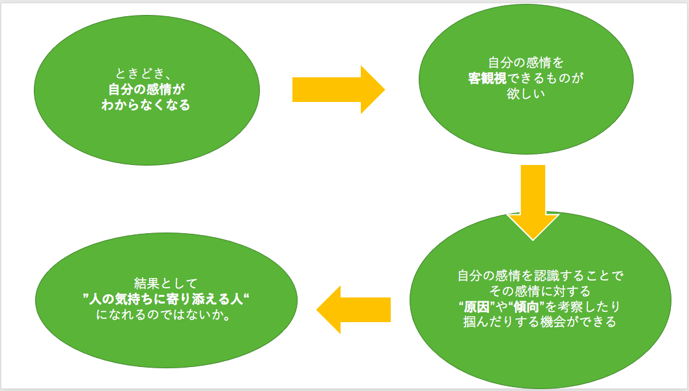

raspberrypi4 未来への兆し

今回は
①私ができること
②取り入れたい要素
③達成したい目的
の３方向からアプローチをかけて
アイデアに落とし込んでいく。
✳︎私ができること
今の私にできることは
・LEDの制御
・音声出力
・表情認識
の３つのスキルである。
✳︎取り入れたい要素
私が取り入れたい要素は
・猫
→どんな形でもいいから猫の要素は入れたい。
・かわいい
・自分の感情を視覚化
の３要素である。
✳︎達成したい目的
達成したい目的は、
”人の気持ちに寄り添えるもの”を創作すること。
✳︎目的に対する根拠
目的に対する根拠は以下の図の通りである。

✳︎アイデア
思いついたアイデアは下記の写真の通りである。
一応アイデア②の方向で行きたいと思っているのだが
兎にも角にも
私はfusionがものすごく苦手である。
また、アイデアは固まったものの
肝心な
LEDとカメラの設置場所をどうするかが
全くいい案が思いつかない。。。
まあとりあえず、fusionを使ってこの頭の部分を
作りながら良い方法がないかを考えていこうかな。。